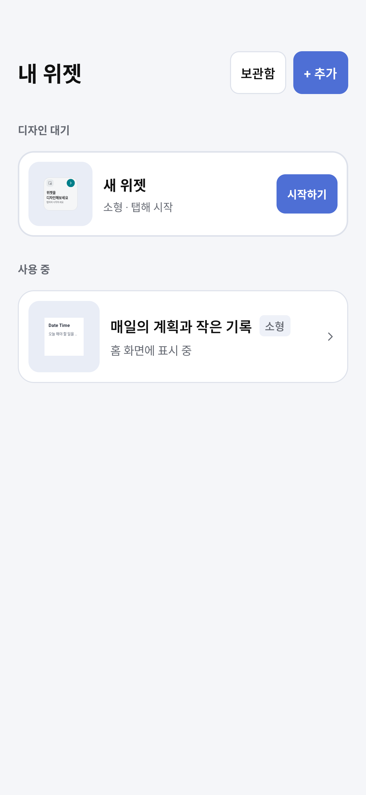
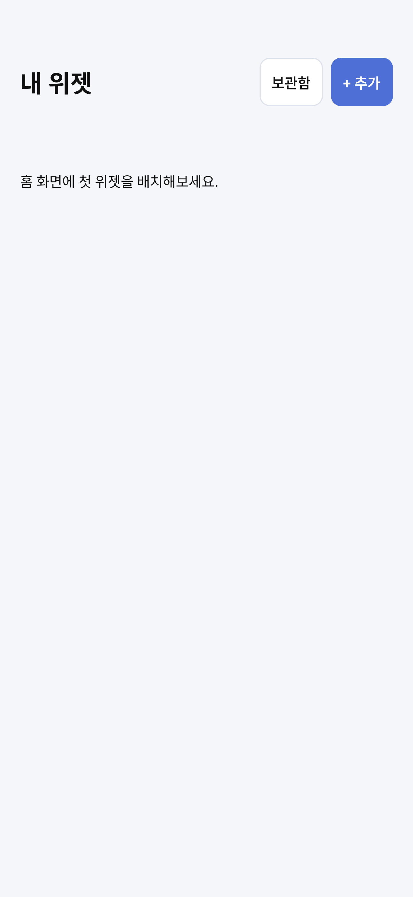
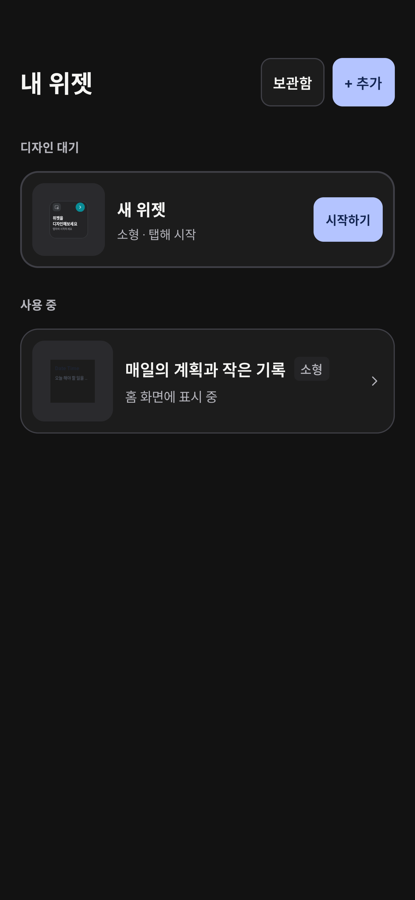
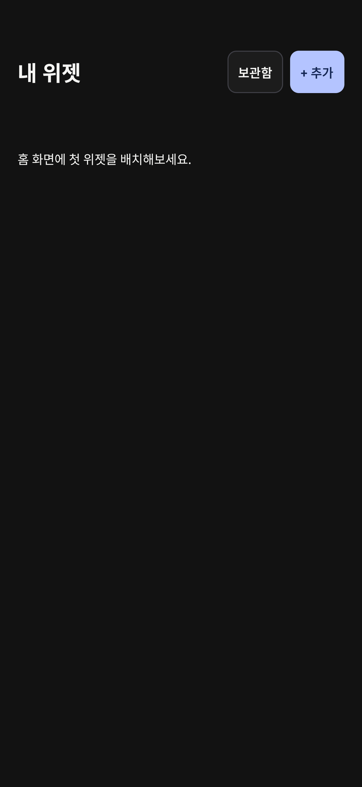

홈 위젯 대시보드
홈과 보관함
- 화면 ID
home-dashboard- 모듈
- MyWidget :app
- 진입 경로
- 앱 런처 → home
- 구현 방식
- Jetpack Compose
- 주요 상태
- 로딩
- 비어 있음
- 조회 실패
- 미설정 슬롯
- 구성된 슬롯
- 문서 누락
- 테마
- 라이트
- 다크
- 반복 UI
- 헤더 보조 동작
- 설치 위젯 카드
- 다시 시도
- 평가
- 설치 인스턴스별 조작과 썸네일이 분리되어 있습니다. 제목은 기본 2줄·1.3배 3줄이며 1.6배 이상에서 요약과 함께 충분히 펼칩니다.
- 적용 상태
- 설치 위젯 행 제목·요약의 큰 글꼴 계약을 적용하고 보관함 진입 검증을 수정
- 코드 조사
- 코드 조사 완료
- 화면 확인
- 실제 앱 경로 확인
- 실행 근거
- API 35 기본 560dpi, 411dp 폭, fontScale 1.0에서 라이트·다크 Compose 샘플을 네이티브 캡처했습니다. 범위는 설치 위젯·빈 대시보드입니다. API 35 QaSmokeJourneyTest에서 홈과 보관함을 거쳐 실제 문서를 편집기에 열고 뒤로 돌아왔습니다. 보관함의 필터와 홈의 긴 제목은 한·영 라이트·다크, 320~390dp, 글꼴 1~2배의 별도 렌더 테스트를 통과했습니다.
- 비고
- 레거시 Home Activity alias는 같은 MainActivity를 엽니다. 계정·로그인 경로는 등록되어 있지 않습니다.
구현 위치
HomeScreen·MyWidget/app/src/main/java/com/mywidget/editor/feature/home/HomeScreen.kt:96HomeDashboardContent·MyWidget/app/src/main/java/com/mywidget/editor/feature/home/HomeEntryContent.kt:88InstalledWidgetDetails·MyWidget/app/src/main/java/com/mywidget/editor/feature/home/HomeEntryContent.kt:381
사용 컴포넌트
Android 네이티브 예시
아래 캡처에 표시된 상태와 기기 조건을 확인했습니다.

411 × 891 dp · 560 dpi · 글꼴 1배 · API 35 · ko-KR
캡처 기준 HEAD
28c96a452 · 소스 지문 2926a62326fe · 2026-11-13T13:54:53.964821Z
411 × 891 dp · 560 dpi · 글꼴 1배 · API 35 · ko-KR
캡처 기준 HEAD
28c96a452 · 소스 지문 2926a62326fe · 2026-11-13T13:54:53.964821Z
411 × 891 dp · 560 dpi · 글꼴 1배 · API 35 · ko-KR
캡처 기준 HEAD
28c96a452 · 소스 지문 2926a62326fe · 2026-11-13T13:54:53.964821Z
411 × 891 dp · 560 dpi · 글꼴 1배 · API 35 · ko-KR
캡처 기준 HEAD
28c96a452 · 소스 지문 2926a62326fe · 2026-11-13T13:54:53.964821Z